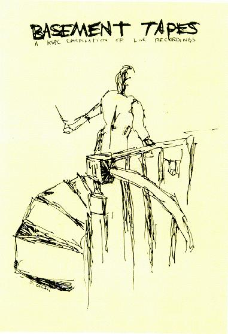

the kspc basement tapes

for the back side of the album click here
title: the kspc basement tapes
format: 12"
side 1:
the 5.6.7.8's - oh my soul
some velvet sidewalk - loch ness
loomis slovak - band stab
ruby falls - evangeline falls
the mountain goats - the anglo saxons
evergreen
solmania - sample and hold (edit)
crayon - the snap-tight wars
side 2:
shoeface - six
love child - cigarette ash
bastard noise - live improv on the at random show
cambria - platinum
nothing painted blue - rag content
zeni geva - skullfuck
unwound - broken e-strings
refrigerator - generic hardcore fusion
nomeansno - i don't wanna go down to the basement
please mail any questions/comments/complaints, or just notes hello to:nall@themountaingoats.net